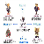

首页
网站说明
心理测试
关于我们
•
联系我们
•
隐私条款
•
友情链接
•
广告合作
推荐
爱情
个性
趣味
健康
专业
付费
你的智商因何罢工?
15334 人测试过
2014-07-26 发布
你的智商会因何而罢工？自私？敏感？柔弱？让我们来揭晓答案吧！
开始测试
猜你喜欢：
换一换
你会是便利贴女孩吗
有一种女孩，朴素、安分、从不奢望什么，我们叫她“便利贴女孩”，虽然功能小小的，但又不可或缺，就像便利贴一样。关于便利贴女孩的概念，源于《命中注定我爱你》这部台湾偶像剧，陈乔恩解释：“便利贴女孩的存在，就像便利贴一样，人人撕下来就用，但未必用过就丢，或许有人会在...
参与人数：14775
题量： 1
你经不起哪种诱惑？（女生版）
是否有种不甘心于现在生活的想法？是否常常羡慕周围朋友们的生活？是否内心隐隐有一种想要改变现状的冲动？让我们测测你最容易被哪种人诱惑吧！
参与人数：17261
题量： 13
你的爱情绝症是什么？
想不想知道你的爱情绝症是什么呢?快来做个小测试告诉你答案哦!
参与人数：14613
题量： 1

PDP性格测试
你是老虎、孔雀、考拉，还是猫头鹰、变色龙？五种特质没有不好，只有不同，而且与能力等没有关系目前是全球最大的个性特质与人才培养的顾问公司之一，专注于领导力开发及组织发展，总公司在美国已有数十年历史，目前全球已有三十多国家使用PDP系统PDP(Profession...
参与人数：35275
题量： 30
你们该做恋人OR朋友?
总是对他特别关注，为他偷看了你一眼而心跳加速，可是他到底是不适合你呢？这到底是不是爱呢？是你的错觉吗，还是他只是把你当朋友？而你们该做恋人还是朋友呢？
参与人数：19353
题量： 14